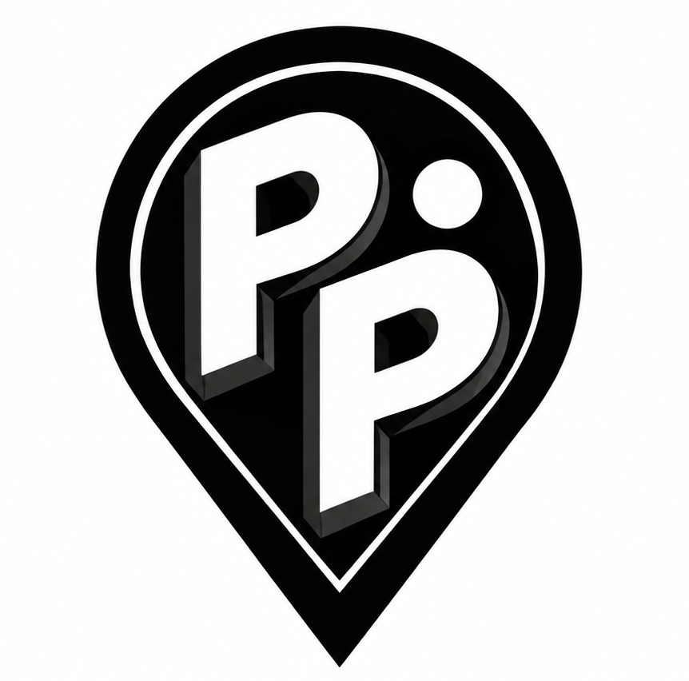
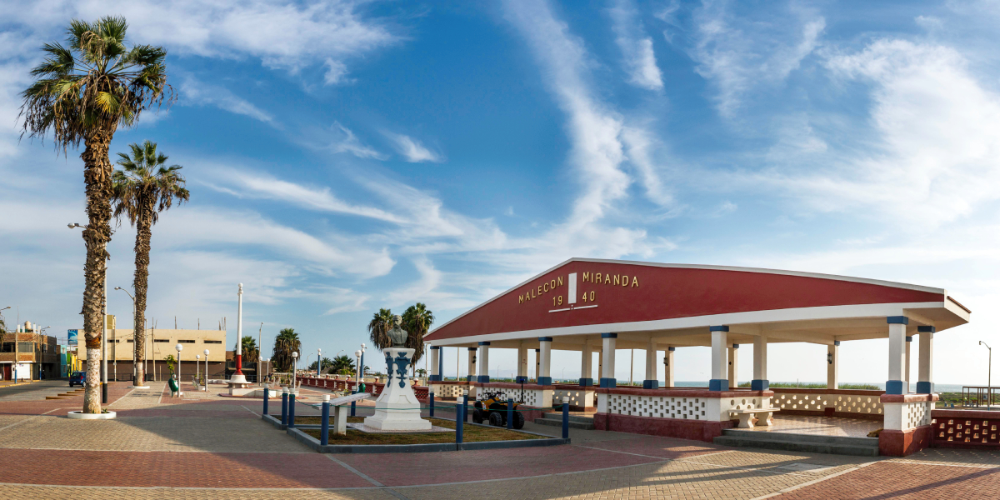
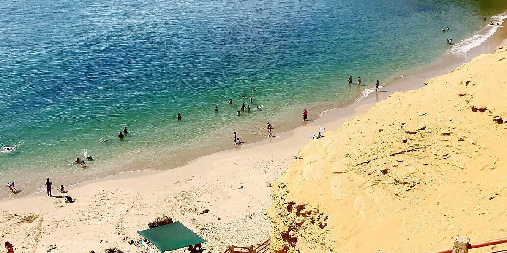

La Plaza de Armas, uno de los espacios que forma parte de la historia e identidad de nuestra ciudad.

Un espacio para disfrutar del paisaje, la brisa marina y la vida cotidiana de Pisco.

Playas, paisajes y personas que forman parte de la identidad de nuestra provincia.